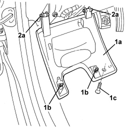

7040A37 FUSE BOX COVER IN INSTRUMENT PANEL - R.R
- Path
- Procedures > 70 FITTINGS > 7040 BODY INTERIOR FITTINGS AND TRIM > 7040A PASSENGER COMPARTMENT TRIMS > 7040A37 FUSE BOX COVER IN INSTRUMENT PANEL - R.R
- Kind
- repair procedure (removal / refitting; the operation number is the code)
- Applies to
- all engines; all production periods
- Interactive page
- https://sloeber94.github.io/elrnDB/alfa/159/en/#/939011243
Applies to: all engines; all production periods
 Removing
Removing
 Refitting
Refitting1. Undo the bolt (1c) and open the fuse access cover (1a), releasing the retainers (1b).
2. Release the pins (2a) and extract them, keeping the cover (1a).

Applies to: all engines; all production periods
Refitting
Removing- Check that the cover is not damaged.
- Position the cover.
- Fit the pins and attach them.
- Close the cover and attach the retainers.
- Tighten the bolt (1c).
Topics that link to this page (25)
- 1820B20 MASTER CYLINDER (PUMP) - R + R
- 3330B22 BRAKE PEDAL - R+R FOR MANUAL GEARBOX VERSIONS
- 3330B26 CLUTCH PEDAL - R+R
- 4110A29 MOUNT WITH STEERING SHAFTS - R R - INCLUDES STEERING WHEEL R R - FOR RIGHT-HAND SIDE VERSIONS
- 4110A30 SUPPORT WITH STEERING CONTROL SHAFTS - R+R
- 5010B24 UNDER-FACIA AIR DUCTS - R.R.
- 5040C10 AIR CONDITIONING CASING - R.R
- 5040C50 AIR CONDITIONING HEATER RADIATOR - R.R.
- 5040C64 A/C EVAPORATOR - R+R
- 5040D80 AIR CONDITIONER SYSTEM WIRING BUNDLE - R R OR REPLACE
- 5040D86 AIR CONDITIONING RIGHT AIR MIXTURE FLAP CONTROL MOTOR - R.R
- 5040D94 AIR CONDITIONING LEFT UPPER AIR DISTRIBUTION FLAP MOTOR (DEFROST) - R.R
- 5040D96 AIR CONDITIONING RIGHT UPPER DISTRIBUTION FLAP MOTOR (DEFROST) - R.R
- 5505A10 JUNCTION UNIT - R+R
- 5505A32 BODY COMPUTER - R.R
- 5505A35 MAIN BODY COMPUTER/JUNCTION UNIT - R.R.
- 5505C28 ENGINE COMPARTMENT AND A.B.S BUILT-IN WIRING - R.R.
- 5505C31 BUILT-IN WIRING UNDER DASHBOARD - R.R.
- 5505C41 PASSENGER COMPARTMENT WIRING - R.R
- 5580C22 AIR BAG MODULE - PASSENGER SIDE - R.R
- 5580C24 PASSENGER SIDE AIR BAG MODULE SUPPORT R. R.
- 7005A14 FRONT SIDE DOOR - ADJUST CENTERING AND MOULDING - INCLUDES ADAPTATION OF HINGES AND SEALS ON DOOR COMPARTMENT
- 7005A24 FRONT SIDE DOOR HINGES (BOLTED) - R.R. WITH DOOR DETACHED
- 7040A10 DASHBOARD TRIM - R+R
- 7210A74 R R FACIA SUPPORT BEAM